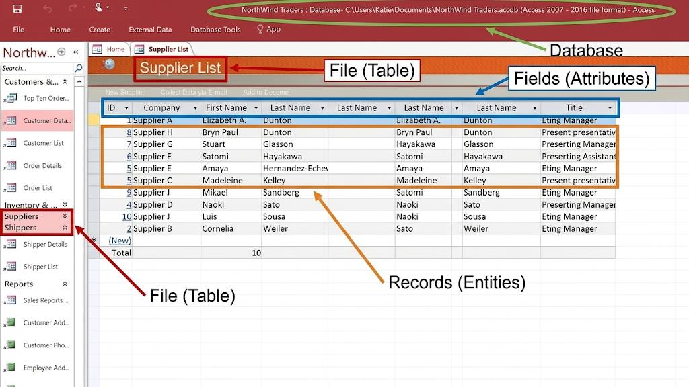
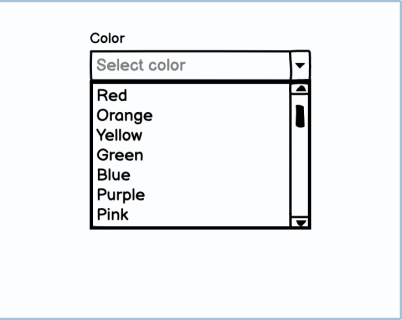
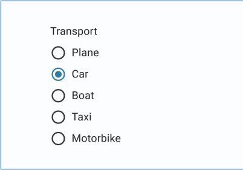
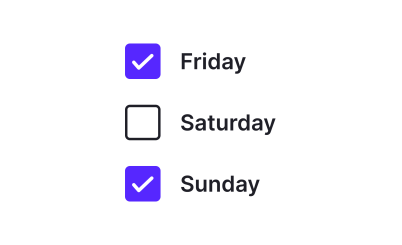

Databases, data errors, validation and verification.
Databases vs Spreadsheets
Why use a database?
For managing a large amount of data, a database is usually a better choice than a spreadsheet.
A database management system (DBMS) allows us to organise, store and retrieve data efficiently with graphical user interface (GUI).
Structure of a database — a database contains Files (Tables); each table contains Records (Rows) and Fields (Columns).

An Access database example — File (Table), Fields (Attributes) and Records (Entities).
Garbage In, Garbage Out
The principle
If the input data is wrong or low-quality, the output information will also be wrong or low-quality. Data control (validation and verification) is essential to prevent this.
Data Errors
Common types of data errors
Error
Description
Example
Solution
Data source error
Incorrect data is provided by data source.
Someone provides an email address which does not exist.
Send an activation code to the email address and request the user to enter the code.
Transcription error
Data is misread, misheard or mistyped. 讀錯. 1 vs l, 0 vs O
—
· Validate the data by checking the spelling of words. · Verify the data by asking the user to type the data again. · Proofread the data.
Transposition error
Incorrect placement of the data.
12345 → 12354
—
Data Validation
Validation vs Verification
Data validation: done by computers
Data verification: done by humans
Types of data validation
Type
Function
Example
Presence check
Ensures that there must be data in the required fields.
An applicant must provide their name.
Fixed value check
Ensures that the data can only be selected from a list of specific values.
The sex of an applicant must be either "M" or "F".
Type check
Ensures that the data must be of a certain type.
The age of an applicant must be a number.
Range check
Ensures that the data must be within a certain range.
The age of an applicant must be larger than 12.
Length check
Ensures that the length of the data must match certain criteria.
An applicant must provide an 8-digit phone number.
Format check
Ensures that the data must be in a specific format.
The email address of an applicant must contain an "@" symbol.
Uniqueness check
The data must be unique for the field.
Each student can apply once only. Thus, there should not be any duplicated student IDs among the applicants.
Check Digit
Check digit
Check digit
Parity check (binary only): to help detect the error during data transmission, a parity bit, similar to the check digit, can be appended to the end of the binary code to ensure that the total number of 1s in the code is even or odd.
Original binary code
Total number of 1s
Even parity check
Odd parity check
0000 0000
0
0000 0000 0
0000 0000 1
1010 1010
4
1010 1010 0
1010 1010 1
0100 1011
3
0100 1011 1
0100 1011 0
1110 0111
5
1110 0111 1
1110 0111 0
User Interface Designs for Validation
Common UI controls
There are different user interface designs to make data validation easier:
Drop-down list
Data validation: Fixed value check — only one of the specific values can be input.

Colour drop-down list — only one of the listed colours can be chosen.
Radio button
Data validation: Fixed value check — only one of the specific values can be input.

Transport radio buttons — only one option can be selected.
Checkboxes
Data validation: Fixed value check — only the specific values can be input. Multiple values can be selected.

Checkboxes for days of the week — multiple values can be selected.
Date picker
Data validation: Type check — only dates can be input. Format check — the date must be in a certain format, such as "DD/MM/YYYY".
Date picker — only valid dates can be chosen.
Data Verification
當電腦握唔到個error，由人去doublecheck
Type
Description
Example
Inputting data twice
It requires an operator to input the same data twice. 1 個人入兩次
When a user wants to set a new password for their account, they are required to enter the password two times.
Double data entry
It requires two operators to input the same data independently. 2 個人入一次
Two operators are hired to enter the data of paper questionnaires into an electronic form independently.